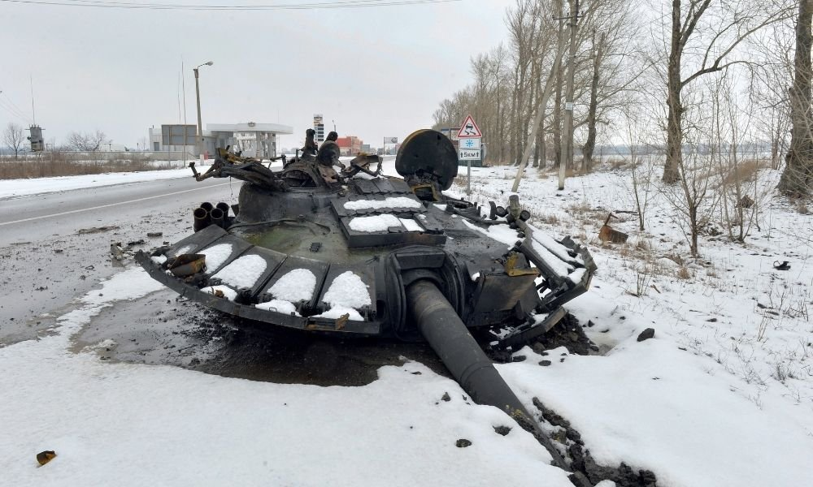
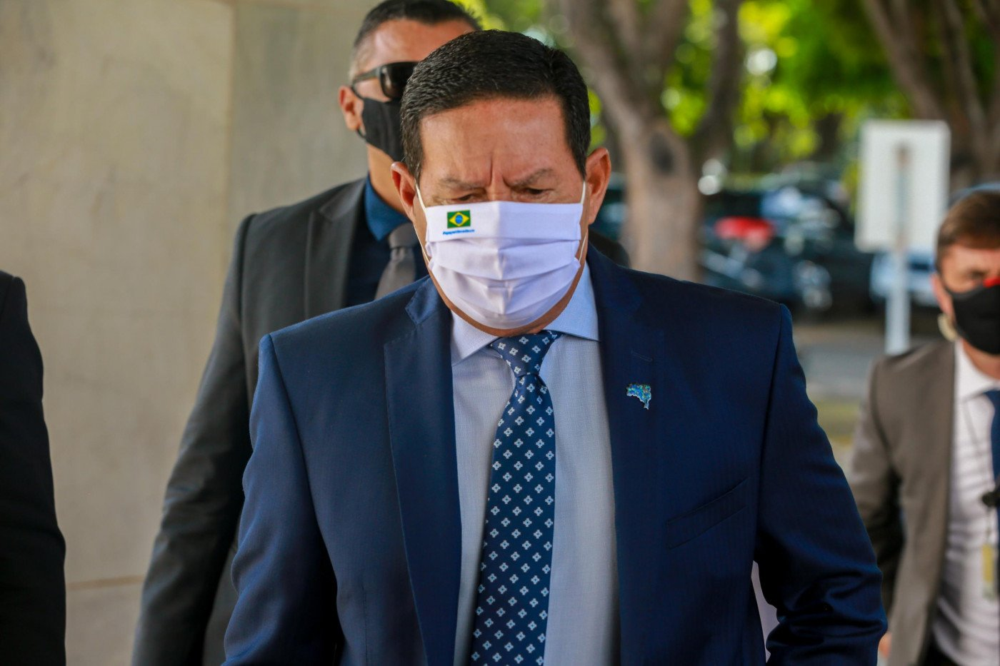
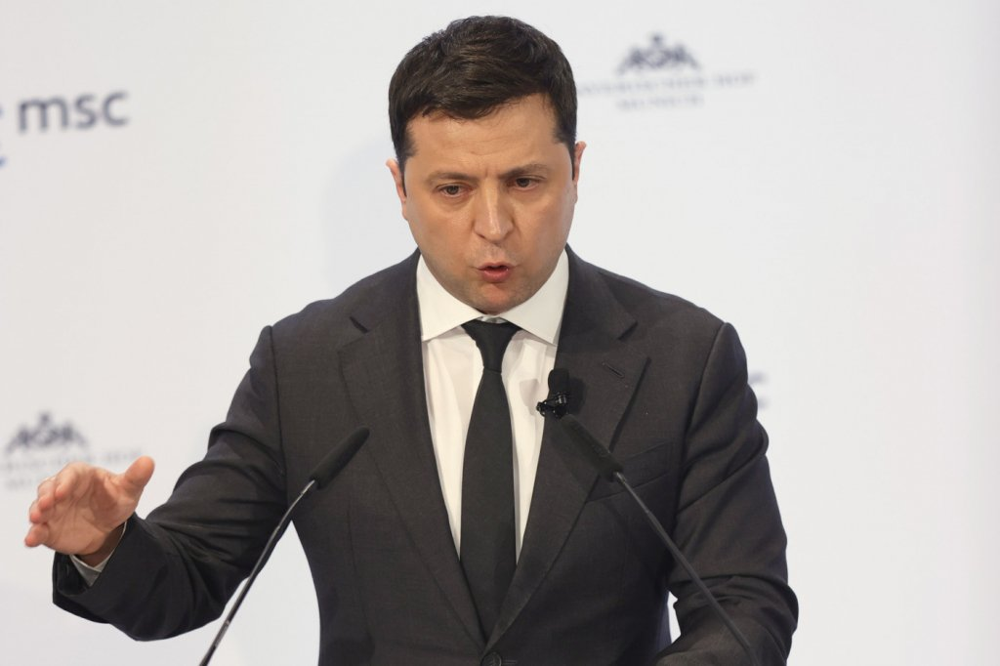
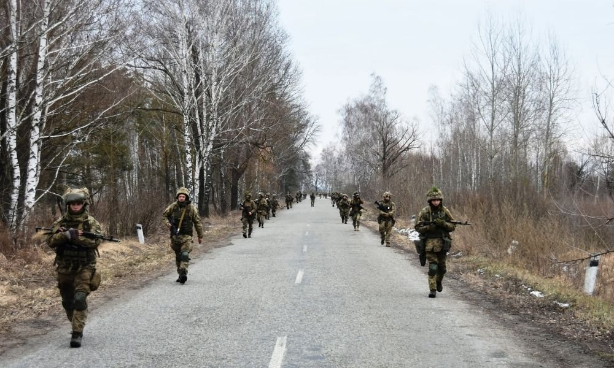
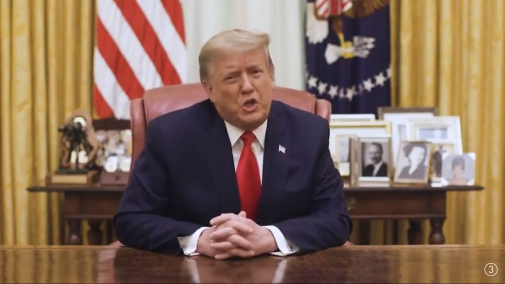

No final da noite de quarta-feira, 23, o presidente da Rússia, Vladimir Putin, autorizou o maior ataque de um país europeu contra outro do mesmo continente desde a Segunda Guerra. O governo russo justifica ação militar para proteger separatistas no leste da Ucrânia. “Tomei a decisão por uma operação militar”, declarou Putin em uma mensagem inesperada, transmitida pela televisão, pouco antes da meia-noite no horário de Brasília. As tensões geopolíticas começaram após a Organização do Tratado do Atlântico Norte (Otan) aumentar as atividades no território ucraniano. Depois de diversos movimentos de países ocidentais para dissuadir Putin de uma possível invasão ao país, o mandatário russo decidiu reconhecer a independência das repúblicas de Donetsk e Luhansk, internacionalmente reconhecidas como pertencentes à Ucrânia, na última segunda-feira, 21, aumentando a tensão na região. A crise geopolítica teve seu estopim na noite de quarta-feira, 23, com o presidente russo dando sinal verde para a operação militar na Ucrânia. Segundo as autoridades ucranianas, as Forças Armadas da Rússia realizaram ataques e bombardeios em diversas regiões do país, incluindo em grandes cidades do país, como Odessa, no sul da Ucrânia, e a capital Kiev.

Com bandeiras brancas, militares russos chegam a vilas ucranianas e atiram em civis, alerta governador
Latest news

Mourão condena ataque da Rússia e compara a ação da Alemanha hitlerista

Rússia continuará invasão à Ucrânia até cumprir seus "Objetivos Fixados"

Bolsa da Rússia despenca 33% após invasão da Ucrânia

Trump: O atual governo é fraco e inrresponsável